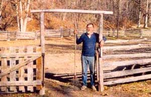
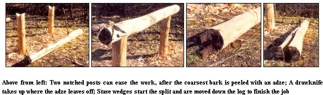
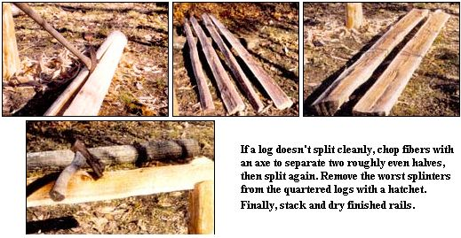
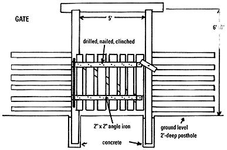
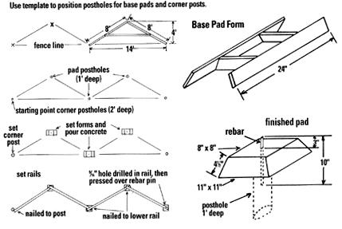

. . . on the other side
of the split rail fence.
We wanted a split rail zigzag fence (also called a snake or worm fence), which was a form of construction prevalent in Colonial America. Instead of herding livestock the European way, by using swineherds and shepherds, Colonial homesteaders put their time and energy into building fences. Fencing land was such a common pioneer practice - by one estimate there were 6 million miles of wooden fence in America by the 1880s that townships often required the services of a fence viewer. This locally elected official insured that new fences were built exactly on boundary lines. He also settled arguments concerning loose livestock and made sure all fences in his district were in good repair.
Though past its heyday, split rail fencing remains as relevant a construct in rural America today as it was in the days of our pioneer ancestors, when the value of wooden fencing often exceeded that of the land itself.
In Colonial days, the rule of thumb for fence building was that you needed one acre of timber to fence ten acres. In our case, to build 500 feet of fence we needed 414 fence rails. We took 38 trees, all oak and cedar, from our 15-acre woodlot, cut each tree into two or three 9' logs, then quartered each log to produce four rails. Keep in mind that selecting trees for split rails is not like cutting dead and hollow trees for firewood; they must be sound, straight and the right size.
When it came time for construction, I took hints from Colonial fencing, while making a few changes and improvements to the pioneer technique. Back then, the standard length for a rail was 11', a length so widely accepted that farm fields were often measured by walking the fence line and counting the rails. However, I made the length of our rails 9' so I could get three sets of rails from most trees felled, and so that the completed fence would be less likely to sag.
Nineteenth-century landowners were oftentimes in a hurry to get land cleared and fences built, and as soon as logs were sawn out and split, the fences started up. Unlike them, I had time to debark each log as it was split to prevent future rot. I also seasoned the split rails for a year so that if they were going to warp, they would do so in the rail pile and not on the fence. Finally, I anchored our fence with concrete pads and rebar instead of using traditional sunken charred posts.
Splitting rails is not difficult, nor is it the drudgery I had always assumed. In fact, the work is similar to splitting firewood. First, you need a large work area. I chose a shaded, out of the way place, with plenty of room for dragging logs. There, I sunk two large posts, 6' apart, and sawed V-notches about waist high in each one. This makeshift stand proved invaluable for supporting the logs while we peeled and debarked them.
When it comes time to cut trees, be careful to choose ones that are straight and free of knots and limbs. While any tree can be cleaned and split with some extra effort, choosing wisely will greatly ease the job. As for tools, you'll need a drawknife (a woodworker's blade with handles at both ends, used for shaving surfaces), an adze (an ax-like cutting tool used chiefly for shaping wood), a hatchet, an ax, a sledgehammer and stave wedges.
Once a log is dragged to the work area, the first step is to remove the bark. I find that red oak bark is difficult to remove with a drawknife, so I rough-peel it with an adze or ax on the ground, then lift the log onto the stand and finish it with the drawknife. White oaks are easier and go right on the stand to get debarked with the drawknife.
After the log is cleaned, it is then dropped to the ground, ready for quartering. First, split the log in half by starting two stave wages in the log end with the smaller diameter. Center the wedges one above the other and drive them in with an 8-pound sledge. A crack usually starts down the log, where you can set in another wedge, drive it, etc., until the log splits all the way down. If possible, make sure the crack doesn't veer off to one side; you can guide it somewhat by positioning the wedges in the right way and doing a little chopping with the ax. This can sometimes be more more trouble than it's worth, however, in which case it's best to just let the split follow its natural course. If the finished rail is smaller on one end, you can always adjust as the fence goes up.
Repeat the procedure until you get four quarters - these are your rails - then place the wood back on the stand and remove the worst splinters with a hatchet. Finally, stack the rails for drying.
It's best to lay out your fence as a row of isosceles triangles placed end to end, with measurements of 8' x 8' x 14'. The 14' sides constitute the sight line (where a straight fence would be), while the 8' sides are where the rails will go. The apex of each triangle should rest about 4' off the sight line. Also, since the layout lengths are 8' and the rail lengths are 9', the ends of each rail will protrude a few inches as the rails go up.
To make the zigs and zags of your fence equal in length and angle, create out of scrap wood an 8' x 8' x 14' triangle template. Then go around the enclosure, marking the spots for the portholes (for the far corners and for any gates you might want), as well as for the concrete base pads (see illustration). You may find you have to retrace your steps a couple of times, making minor changes so the fence will tie into the gate and corner posts, while the rails remain all the same length. I accomplished this by adjusting the radius curve and the gate openings a little. When everything is set, dig a 1'-deep hole at each pad location, to be filled with concrete to give your base pads some additional strength. Corner and gate portholes should be 2' deep.
Next, make three small, reusable base pad forms out of scrap wood. Place the forms over three of your base pad portholes, fill with concrete and let dry overnight. The following morning, remove the forms, clean and oil them, place them over the next portholes, and pour three more. Before the mix sets, insert a 10" length of 1/2" rebar into the center of each pad so that 3" protrude from the top. While you're at it, now's a good time to pour concrete around the corner and gate posts to get them ready for the next step.
When you're ready to place the rails, start with the heaviest ones, reserving the smaller rails for the top rows of your fence. Center the first rail between the beginning corner post and the first pad, mark the rail where it meets the 1/2" rebar sticking out of the pad, then drill a 9/16" hole in the rail. Push the rail down over the rebar and nail the other end to the post. Continue around, adding rails until you finish the entire first row of fence. Nail subsequent rows with 20-penny nails, changing to 16penny as the rail size decreases, and finally to 10-penny for the top. If a rail is twisted and refuses to sit properly, notch its end with a saw and hatchet until it fits. Keep building up until the fence looks right, usually at around six rails high.
Once our fence was up, I built and hung two gates (see diagram, above). The split rails have been in use for two years now without showing signs of rot or warping, though a few rails are starting to show some specks of fungus. I imagine I may eventually have to put preservative on some of the fence, but if I can keep from it, I'd rather leave it natural.
We love the way our fence looks around our small garden. When I get around to it, I'm going to enclose a two-acre meadow using the same split rail design. I don't think any other style of fence could be so right for our farm.
Do-It-Yourself With articles and products from www.motherearthnews.com
|
 |
|
 |
|
 |
 |
 |